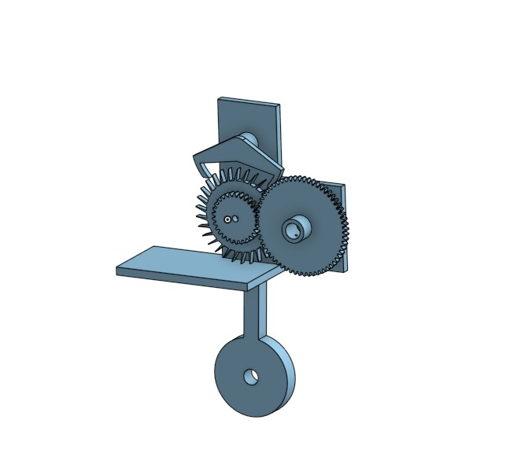
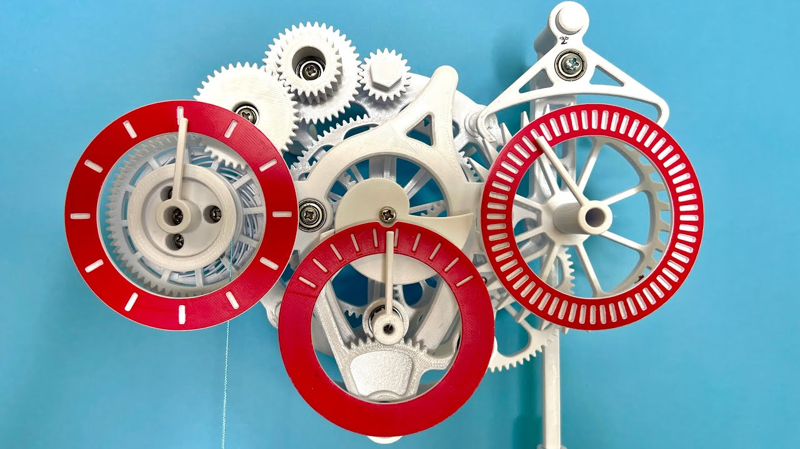

Sheet 02.3 — CAD & Manufacturing
Hardware Build
3D-Printed Mechanical Clock
I am working on a fully working mechanical clock, designed from scratch in CAD and manufactured entirely on a home 3D printer — every gear, escapement part, and housing component will be modelled and manufactured by me.
aOverview
I have always been fascinated with horology and have wanted to take on a project like this for a long time. I had previously deconstruceted an antique clock which taught me a lot about how clocks work but left much to be discovered about the manufacturing and design process. The problem is that to manufacture the tiny and precise components found in watches requires specialist machine tools that I don’t have access to. I recently saw a video by the youtuber Engineerzy where he made a 3d printed mechanical clock. This inspired me to try the same as I thought it would deepen my understanding of how clocks work.
bDesign & CAD
I initially design parts by masking rough sketches in my notebook. I then use Onshape to create precise CAD models for the components. Designing a functional escapement mechanism has been challenging as the geometry needs to be very precise and 3d printers don’t have very good tolerance. Aided by an old paper by Mark V Headrick I was able to design a deadbeat escapement mechanism which worked very well when simulated in cad but failed when 3D printed. This is because the small, sharp teeth were difficult to manufacture on the 3D printer. Even after extensively tuning the 3D printer and slicer software the teeth still came out misshapen. In the end I increased the size of the escapement to minimise the effects of inaccuracies.
cManufacturing & Tolerancing
Whilst 3D printers are great for fast prototyping one limitation that I have had to take into account is that 3d printers are far less precise than other manufacturing methods such as cnc lathes. Initially I wanted to make the clock fully 3D printed however I quickly realised that the gear axles would not be accurate enough and would have very high friction. As a result I am now using small bearings and M4 blots to make the axles.
dGallery

The antique clock I disassembled

A Cad assembly of the escapment mechanism

The inspiration for this project
eReflection
So far I have learnt that really tuning your manufacturing method is critical. The precise tolerances needed for this project could have only been achived through carefuly tweaking the 3D printer and splicer settings. I think the precision required will reduce slightly from here however there is the new challenge of overcrowding and intergrating all the different mechanisms in one compact package.
fSpecification
| Parameter | Value |
|---|---|
| Gear train stages | N/A |
| Escapement type | Deadbeat |
| Material | PLA+ |
| Print time | Pending |
| Timekeeping accuracy | Pending |